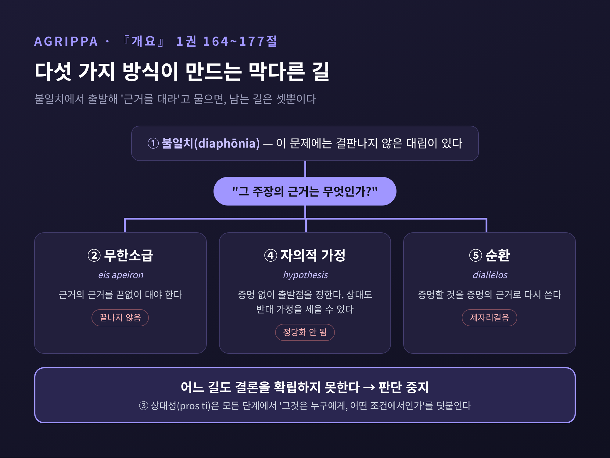

피론주의 회의주의 — 판단을 멈추면 왜 마음이 평온해진다고 보았을까
이번 글에서는 고대 그리스의 피론주의 회의주의를 논증의 뼈대 중심으로 정리해 보겠습니다. 핵심 질문은 하나입니다. 왜 '판단을 멈추는 일'이 마음의 평화로 이어진다고 보았을까요.
먼저 세 줄로 요약하면 이렇습니다.
- 피론주의자는 모든 주장에 같은 무게의 반대 주장을 맞세웁니다. 이 균형(등가성, isostheneia)이 판단 중지(에포케, epochē)를 낳습니다.
- 판단을 멈추면 '무엇이 정말 좋은가'를 둘러싼 불안이 사라지고, 평정(아타락시아, ataraxia)이 그림자처럼 따라온다고 보았습니다.
- 그렇다고 아무것도 하지 않는 것은 아닙니다. 회의주의자는 믿음이 아니라 '나타남'과 관습을 따라 살아갑니다.
■ 피론과 티몬 — 아무것도 쓰지 않은 스승, 풍자시를 쓴 제자
피론은 기원전 360년경에 태어나 270년경까지 살았던 것으로 보입니다. 고향은 펠로폰네소스의 엘리스입니다. 알렉산드로스 대왕의 인도 원정에 동행해 '벌거벗은 현자들'을 만났다는 이야기도 전합니다.
다만 이 만남이 그의 철학을 빚었다는 서술에는 신중할 필요가 있습니다. 브리태니커는 그가 인도 수행자들에게서 '상황에 대한 무관심에서 흘러나오는 행복'을 보았다고 적습니다. 반면 스탠퍼드 철학 백과사전(SEP)은 그 영향 관계에 뚜렷한 근거가 없다고 지적합니다.
더 근본적인 어려움도 있습니다. 피론은 글을 한 줄도 남기지 않았습니다. 그의 생각은 제자 티몬(기원전 325년경~235년경)의 단편을 통해 재구성해야 합니다. 티몬은 다른 철학자들을 조롱하는 풍자시 『실로이』를 썼는데, 지금 남은 단편만 60개가 넘습니다.
피론 사상의 요약으로 가장 자주 인용되는 대목은 후대 저술가 아리스토클레스가 전한 티몬의 정리입니다. 행복하려는 사람은 세 가지를 물어야 한다는 것입니다.
- 사물은 본성상 어떠한가. — 구별되지 않고(adiaphora), 잴 수 없으며(astathmēta), 판정할 수 없다(anepikrita).
- 우리는 어떤 태도를 가져야 하는가. — 어떤 것에 대해서도 "있다고 하는 것보다 더 있는 것도, 없다고 하는 것보다 더 없는 것도 아니다"라고 말한다.
- 그러면 무엇이 오는가. — 먼저 말을 삼가는 상태(aphasia), 그다음 마음의 동요 없음(ataraxia).
흥미로운 점은 첫 번째 답을 두고 해석이 갈린다는 사실입니다. 사물 자체가 본래 비결정적이라는 '형이상학적' 주장으로 읽으면, 피론은 엄밀한 의미의 회의주의자가 아니게 됩니다. 인간이 사물의 본성을 판정할 수 없다는 '인식론적' 주장으로 읽으면, 후대 회의주의의 선구자가 됩니다. SEP는 이 대목의 상당 부분이 티몬 자신의 발전일 수 있다는 가능성도 함께 적어 둡니다.
티몬의 다른 단편은 이후 전통의 방향을 미리 보여줍니다. "꿀이 달다고 나는 정립하지 않는다. 그러나 달게 나타난다는 것에는 동의한다." 사물의 본성에 대해서는 말을 아끼되, 나에게 나타나는 것은 그대로 받아들이는 태도입니다.
■ 섹스투스의 정의 — 대립시키는 능력이 평정에 이르는 길
피론의 이름을 내건 운동이 본격적으로 일어난 것은 기원전 1세기 아이네시데모스 때입니다. 흔히 '부활'이라 부르지만, 고대 자료 가운데는 그를 이 전통의 실질적 창시자로 취급하는 것도 있습니다. '피론주의'가 하나의 지속적 전통의 이름이 된 것도 이때부터입니다. 그리고 그 전통의 전모를 오늘날까지 가장 온전하게 전해 주는 저술이 섹스투스 엠피리쿠스의 『피론주의 개요』입니다.
섹스투스의 생애는 거의 알려져 있지 않습니다. 대략 2~3세기 사람으로 추정되며, 학자에 따라 2세기 후반을 중심으로 보기도 합니다. '엠피리쿠스'라는 별칭은 그가 의학의 경험학파에 속했기 때문에 붙었습니다. 『개요』는 세 권인데, 1권은 피론주의 자체를 설명하고 2·3권은 논리학·자연학·윤리학의 독단적 이론을 차례로 반박합니다.
섹스투스는 회의주의를 이론이 아니라 능력으로 정의합니다(『개요』 1권 8절).
회의주의란 나타나는 것들과 생각되는 것들을 어떤 방식으로든 서로 대립시키는 능력이며, 대립된 사물과 논변이 같은 힘을 갖기 때문에 먼저 판단 중지에, 그다음 평정에 이르게 한다.
이 정의에는 네 개의 고리가 맞물려 있습니다.
첫째, 대립입니다. "이 꿀은 달다"는 인상이 있으면 "다른 사람에게는 그렇지 않다"는 인상을 맞세웁니다. 둘째, 등가성입니다. 양쪽 어느 편에도 더 나은 근거가 없어 저울이 수평을 이룹니다. 셋째, 판단 중지입니다. 수평인 저울 앞에서는 한쪽에 동의할 이유가 없으니 동의를 보류합니다. 넷째, 평정입니다. 판단을 멈춘 자리에 마음의 고요가 찾아옵니다.
여기서 중요한 대목이 있습니다. 판단 중지는 단순히 '아무 생각이 없는 상태'가 아닙니다. 양쪽을 충분히 따져 본 끝에 내리는 보류여야 합니다. 그래서 섹스투스는 회의주의자를 '이미 답을 포기한 사람'이 아니라 '여전히 탐구하는 사람'으로 규정합니다.
■ 왜 판단 중지가 평정을 낳는가 — 화가 아펠레스의 해면
이 질문에 대한 섹스투스의 답은 의외로 심리적입니다.
회의주의자도 처음에는 평정을 얻기 위해 진리를 찾아 나섰습니다. 그러나 인상과 이론들이 서로 어긋나는 것을 보고 오히려 동요했습니다. 무엇이 참인지 정할 수 없었기 때문입니다. 결국 판단을 멈추었는데, 그러자 뜻밖에 평정이 찾아왔다는 것입니다.
섹스투스는 이를 화가 아펠레스의 일화로 설명합니다(1권 28절). 아펠레스는 말 입가에 맺힌 거품을 그리려다 거듭 실패했습니다. 화가 난 그는 붓을 닦던 해면을 그림에 집어던졌습니다. 그런데 해면이 남긴 자국이 바로 말의 거품이 되었습니다.
평정은 겨냥해서 얻는 과녁이 아니라는 뜻입니다. 섹스투스의 표현대로, 평정은 판단 중지를 "그림자가 몸을 따르듯" 따라옵니다.
이 논리의 바탕에는 불안의 원천에 대한 진단이 깔려 있습니다. 어떤 것이 본성상 좋거나 나쁘다고 믿는 사람은 늘 흔들립니다. 좋은 것을 갖지 못하면 괴롭고, 가지면 잃을까 두렵습니다. '본성상 좋다'는 믿음 자체를 내려놓으면, 그 믿음에 매달린 걱정도 함께 내려놓게 됩니다.
다만 섹스투스가 모든 고통을 없앤다고 약속하지는 않았습니다. 배고픔이나 추위처럼 피할 수 없는 것은 남습니다. 그래서 목표는 두 겹입니다. 믿음의 문제에서는 평정, 피할 수 없는 일에서는 절제된 감정(metriopatheia)입니다. 추위 자체는 괴롭지만, '추위는 본래 나쁜 것'이라는 믿음이 더하는 두 번째 고통은 덜어낼 수 있다는 구상입니다.
■ 판단을 멈추게 하는 장치 ① 아이네시데모스의 열 가지 방식
등가성은 저절로 생기지 않습니다. 피론주의자들은 대립을 체계적으로 만들어내는 논증 틀을 '방식(tropos)'이라 불렀습니다. 가장 오래된 것이 아이네시데모스에게 돌려지는 열 가지 방식입니다(『개요』 1권 35~163절).
예시를 몇 가지만 보겠습니다.
- 동물의 차이: 사람에게 역겨운 배설물이 개에게는 즐거운 냄새입니다. 어느 쪽 감각이 사물을 '제대로' 느끼는지 판정할 기준이 없습니다.
- 감각의 차이: 향수는 코에는 좋지만 혀에는 역겹습니다. 한 사람 안에서도 감각끼리 어긋납니다.
- 상태의 차이: 사랑에 빠져 따뜻한 사람과 화가 나 추운 사람에게 같은 찬 바람은 다르게 느껴집니다.
- 위치와 거리: 물속의 노는 굽어 보이고, 멀리 있는 둥근 탑은 네모나 보입니다. 비둘기 목은 각도에 따라 색이 바뀝니다.
- 양과 구성: 포도주는 적당히 마시면 힘이 되지만 지나치면 몸을 해칩니다. 모래 더미는 매끄러워 보여도 낱알은 거칩니다.
- 관습과 법률: 같은 행위를 두고 문화마다 평가가 정반대입니다.
열 가지는 모두 같은 구조를 공유합니다. "x는 A에게는 F로, B에게는 F가 아닌 것으로 나타난다. 어느 쪽이 옳은지 가릴 기준이 없다. 그러므로 x의 본성에 대해서는 판단을 멈춘다." 여덟 번째인 상대성의 방식은 나머지 전체를 포괄하는 원형이기도 합니다. 모든 나타남은 누군가에게, 어떤 조건에서의 나타남이라는 것입니다.
■ 판단을 멈추게 하는 장치 ② 아그리파의 다섯 가지 방식
열 가지 방식이 주로 감각과 관습을 겨냥했다면, 1~2세기의 아그리파에게 돌려지는 다섯 가지 방식은 정당화 자체의 구조를 겨냥합니다(『개요』 1권 164~177절). 이 부분이 피론주의 논증에서 가장 날카로운 대목이라고 생각합니다.
- 불일치(diaphōnia): 어떤 문제든 철학자들 사이에, 또 일상인들 사이에 결판나지 않은 대립이 있습니다.
- 무한소급: 한쪽을 지지하는 근거를 대면, 그 근거의 근거를 다시 물을 수 있습니다. 끝이 없습니다.
- 상대성: 대상은 판단하는 사람과 함께 관찰되는 것에 상대적으로만 그렇게 나타납니다.
- 가정(자의적 가정): 소급을 끊으려고 증명 없이 출발점을 '그냥' 정하면, 상대도 같은 권리로 반대 가정을 세울 수 있습니다.
- 순환: 증명하려던 것을 증명의 근거로 다시 끌어다 쓰는 것입니다.

다섯 가지는 따로 쓰이기보다 그물처럼 함께 작동합니다. 먼저 불일치가 있음을 보입니다. 독단주의자가 자기 편의 근거를 내놓으면, 회의주의자는 그 근거의 근거를 묻습니다. 그러면 상대에게 남는 길은 세 가지뿐입니다.
끝없이 근거를 대거나(무한소급), 어딘가에서 멈추고 '그냥 그렇다'고 하거나(가정), 처음 주장으로 되돌아오는 것입니다(순환). 어느 길도 결론을 정당화하지 못합니다. SEP는 소급·순환·가정의 세 방식이 오늘날 인식론에서 말하는 일종의 '삼도논법(트릴레마)'에 대응한다고 설명합니다.
이 장치를 어떻게 읽을지에 대해서는 학자들 사이에 이견이 있습니다. 조너선 반스는 이 방식들이 해당 논증 형식을 '잘못된 추론'으로 단죄한다고 읽습니다. 반면 모리슨은 이것이 동등한 반대 논변을 만들어 내는 장치일 뿐이라고 봅니다. 회의주의자 자신은 '소급은 나쁘다'는 원리조차 독단적으로 내세우지 않아야 하기 때문입니다. 섹스투스는 이를 더 줄인 '두 가지 방식'도 소개합니다. 어떤 것도 자명하지 않고, 다른 것으로 확립하려 하면 소급이나 순환에 빠진다는 것입니다.
■ 아카데미 회의주의와는 무엇이 다른가
고대에는 회의주의 전통이 하나 더 있었습니다. 플라톤이 세운 아카데미가 아르케실라오스(기원전 316/5~241/0년경) 이후 회의적으로 돌아선 것입니다. 아르케실라오스는 소크라테스처럼 한 질문의 양쪽을 모두 논증했고, 스토아학파의 진리 기준을 집요하게 공격했습니다. 그 뒤를 이은 카르네아데스(기원전 214~129/8년)는 기원전 156/5년 로마 사절단으로도 이름을 남겼습니다.
섹스투스는 이 아카데미와 피론주의를 분명히 갈라놓습니다. 그는 『개요』 첫머리에서 철학자를 세 부류로 나눕니다. 진리를 찾았다고 주장하는 사람(독단주의자), 진리는 파악할 수 없다고 단언하는 사람, 그리고 여전히 찾고 있는 사람입니다. 섹스투스의 구도에서 아카데미는 두 번째, 일종의 '부정적 독단주의자'에 속합니다. "알 수 없다"고 단언하는 것도 하나의 주장이라는 것입니다.
| 구분 | 아카데미 회의주의 | 피론주의 회의주의 |
|---|---|---|
| 대표 인물 | 아르케실라오스, 카르네아데스 | 피론·티몬, 아이네시데모스, 섹스투스 |
| 진리에 대한 태도 | (섹스투스의 규정으로는) 파악할 수 없다고 단언 | 아직 판정하지 못했으니 탐구를 계속 |
| 행동의 기준 | 합리적인 것(eulogon), 설득력 있는 것(pithanon) | 나타남과 삶의 네 가지 지침 |
| 목표 | 평정을 목표로 내세우지 않음 | 평정(아타락시아) |
다만 이 구분을 그대로 받아들이기는 어렵습니다. 인터넷 철학 백과사전(IEP)은 두 전통의 구분 자체가 "논쟁적"이라고 말합니다. 섹스투스가 경쟁 학파를 다소 단순화했을 가능성도 염두에 두어야 합니다. 실제로 아이네시데모스 자신도 아카데미 출신으로 추정됩니다. 그는 아카데미를 떠나 더 급진적인 회의주의를 되살리려 했고, 당시 아카데미 일각의 입장을 독단적이라 여겼던 것으로 전합니다.
SEP는 차이를 이렇게 요약합니다. 피론주의는 평정을 목표로 하고 '나타남'에 특권을 줍니다. 아카데미는 평정이라는 이상을 갖지 않으며, 입장들을 저울질해 진리에 더 가까울 법한 쪽을 택합니다.
■ "그러면 어떻게 사는가" — 행위 불가(apraxia) 반론과 현상에 따른 삶
회의주의에 가장 오래, 가장 끈질기게 따라붙은 반론이 있습니다. "모든 판단을 멈춘 사람은 행동할 수 없다." 물을 마시려면 '이것은 물이다'라고 믿어야 하고, 길을 피하려면 '저것은 낭떠러지다'라고 믿어야 한다는 것입니다. 이를 흔히 행위 불가(apraxia) 반론이라 부릅니다.
피론을 둘러싼 일화에도 이 반론이 묻어 있습니다. 전기 작가 안티고노스는 피론이 낭떠러지도, 수레도, 사나운 개도 피하지 않아 친구들이 따라다니며 지켜야 했다고 전했습니다. SEP는 이를 적대적 비판이 전기로 둔갑한 것으로 봅니다. 아이네시데모스는 오히려 피론이 일상에서 분별 있게 행동했으며 아흔 살까지 살았다고 반박했습니다.
아카데미는 '믿음 없는 행동 기준'으로 답했습니다. 아르케실라오스는 동의하지 않고도 '합리적인 것'을 따라 행동할 수 있다고 했습니다. 카르네아데스는 설득력 있는 인상을 따르되, 일이 중요할수록 더 엄격히 검토하는 3단계 기준을 내놓았습니다.
섹스투스의 답은 조금 결이 다릅니다. 회의주의자는 나타남을 따른다는 것입니다. 그는 『개요』 1권 13절에서 '믿음(dogma)'을 두 가지로 나눕니다. 나에게 강제로 떠오르는 나타남에 수긍하는 것은 회의주의자도 합니다. 판단을 멈추는 대상은 학문이 탐구하는 '드러나지 않은 것'에 대한 동의뿐입니다.
꿀이 달게 느껴진다는 것은 다투지 않습니다. 꿀이 '본성상' 단지, 단맛의 원인이 무엇인지에 대해서만 판단을 멈춥니다.
그리고 일상의 행동은 다음 네 가지 지침을 따릅니다(1권 21~24절).
- 자연의 안내: 우리는 본래 지각하고 생각할 수 있습니다.
- 감정의 필연: 배고프면 먹고 목마르면 마십니다. 영양학 이론은 필요 없습니다.
- 법률과 관습: 자기 사회의 관습과 전통을 받아들여 따릅니다.
- 기술의 가르침: 목수는 기하학 이론 없이도 배운 대로 문을 답니다.
예전의 철학자는 '왜 그런가'를 먼저 알아야 움직일 수 있다고 보았습니다. 섹스투스의 회의주의자는 '그렇게 나타난다'는 것만으로 움직입니다.
물론 이것으로 논쟁이 끝나지는 않았습니다. 현대 연구자들은 회의주의자가 정말 아무 믿음도 갖지 않는지를 두고 지금도 갈립니다. 마이클 프레데는 이론적 믿음만 버리고 평범한 일상적 믿음은 가질 수 있다고 봅니다(이른바 '도시적' 회의주의). 반스와 번예트는 회의주의자가 어떤 믿음도 갖지 않고 나타남을 인정할 뿐이라고 봅니다('시골뜨기' 회의주의). 번예트는 더 나아가, 평정이 '어떤 탐구도 성공하지 못한다'는 믿음에 기대는 한 '계속 탐구한다'는 자기규정과 충돌한다고 비판합니다. 피론주의의 약점이 가장 날카롭게 드러나는 지점입니다.
섹스투스도 자기 논변이 스스로를 무너뜨린다는 비판을 알고 있었습니다. 그의 대답은 하제(설사약) 비유입니다. 회의적 논변은 몸속 체액을 내보내면서 자기 자신도 함께 빠져나가는 약과 같다는 것입니다. "나는 아무것도 확정하지 않는다"는 말도 그 말 자체를 확정하지 않습니다. 그것은 주장이 아니라, 지금 나에게 그렇게 보인다는 보고입니다.
■ 근대로 건너간 회의주의 — 몽테뉴, 데카르트, 흄
피론주의는 고대 말기에 학파로서 사라졌습니다. 중세에 주로 남은 것은 아우구스티누스의 『아카데미아학파 반박』을 통해 알려진 아카데미 회의주의였습니다. 섹스투스가 다시 읽히기 시작한 것은 르네상스 이후입니다.
1562년 앙리 에티엔이 『개요』의 첫 라틴어 번역을 펴냈습니다. 1569년에는 젠티앙 에르베가 번역한 『학자들에 대한 반박』이 더해졌고, 그리스어 원문은 1621년에야 출판되었습니다. 가톨릭 반종교개혁가였던 에르베는 회의적 논변을 칼뱅주의에 대한 결정적 답으로 보았습니다. 회의주의가 처음부터 순수한 인식론 문제가 아니라 종교 논쟁의 무기로 되살아났다는 점이 눈에 띕니다.
몽테뉴(1533~1592)는 이 흐름을 가장 깊이 흡수한 사람입니다. 1576년경 그는 그리스어 '에페코(나는 판단을 보류한다)'와 프랑스어 'Que sais-je?(나는 무엇을 아는가?)'를 새긴 메달을 만들었습니다. 『에세』에서 가장 긴 장인 「레몽 스봉을 위한 변명」은 섹스투스의 논변에 크게 기대고 있습니다. 그는 자연과 관습을 따라 살고 신의 계시를 받아들이라고 권했습니다. 섹스투스의 '네 가지 지침'과 닮은 결론입니다. 다만 이를 신앙을 위해 이성을 비우는 '신앙주의'로 볼지에 대해서는, 이 해석을 대표하는 리처드 팝킨 이후로도 논쟁이 이어지고 있습니다.
데카르트(1596~1650)는 회의주의를 정반대 방향으로 썼습니다. 1641년 『성찰』에서 그는 감각, 꿈, 그리고 사악한 악령의 가설로 의심을 극단까지 밀어붙입니다. 그러나 목적은 평정이 아니라 확실성이었습니다. 모래를 파내고 단단한 땅에 기초를 놓는 건축가처럼, 의심을 통과한 "나는 있다, 나는 존재한다"에서 지식을 다시 세우려 했습니다. 그는 스스로를 "의심하기 위해서만 의심하는 회의주의자들"과 구별했습니다. 피론주의자에게 판단 중지는 도착점이었지만, 데카르트에게는 출발점이었던 셈입니다.
흄은 고대의 두 전통을 근대 언어로 다시 갈랐습니다. 1748년 『인간 지성에 관한 탐구』 12장에서 그는 이렇게 씁니다. "피론주의, 즉 회의주의의 과도한 원리를 가장 크게 전복하는 것은 행동과 일, 그리고 일상생활의 업무다." 그런 원리는 학교 안에서는 번성할 수 있지만, 실제 대상 앞에서는 "연기처럼 사라진다"는 것입니다. 대신 그는 "지속적이면서도 유용할 수 있는" 완화된 회의주의, 곧 '아카데미 철학'을 권했습니다. 탐구를 일상의 실천과 경험의 범위로 제한하고, 독단을 누르며 겸손을 기르는 태도입니다.
흥미롭게도 흄이 피론주의를 꺾는 무기로 든 '일상생활'은, 섹스투스가 회의주의자의 삶을 지탱하는 원천으로 든 바로 그것이었습니다. 두 사람은 같은 곳을 보면서 서로 다른 결론을 내린 셈입니다.
■ 피론주의를 오늘 읽는다는 것
정리하면 이렇습니다.
피론주의 회의주의는 "아무것도 알 수 없다"는 주장이 아닙니다. 모든 주장 곁에 같은 무게의 반대 주장을 세우는 기술이고, 그 저울 앞에서 동의를 보류하는 태도입니다. 열 가지 방식은 감각과 관습의 차이로, 아그리파의 다섯 가지 방식은 정당화의 막다른 길로 그 균형을 만듭니다. 그리고 판단을 내려놓은 자리에 평정이 찾아온다고 보았습니다.
한계도 분명합니다. 평정이 정말 판단 중지에서 오는지, 회의주의자가 믿음 없이 살 수 있는지, 그 '계속 탐구한다'는 자기규정이 일관적인지는 지금도 열린 질문입니다. 판단을 멈추는 일이 언제나 평화를 주는지도 확신하기 어렵습니다. 결정을 미루는 것이 오히려 불안을 키우는 순간도 있기 때문입니다.
그럼에도 남는 통찰이 있다고 생각합니다. 우리를 괴롭히는 것은 많은 경우 사물 그 자체보다, 그것이 '본래 좋다' 혹은 '본래 나쁘다'는 우리의 확신입니다.
"그렇게 보인다"와 "그렇다" 사이에 한 뼘의 거리를 두는 것.
피론주의가 아직도 읽힐 가치가 있느냐고 물으신다면, 그 한 뼘을 연습하게 해 주는 드문 철학이라고 답하겠습니다.
■ 참고한 자료
- Stanford Encyclopedia of Philosophy, "Pyrrho" — https://plato.stanford.edu/ENTRIES/pyrrho/
- Stanford Encyclopedia of Philosophy, "Timon of Phlius" — https://plato.stanford.edu/ENTRIES/timon-phlius/
- Stanford Encyclopedia of Philosophy, "Ancient Skepticism" — https://plato.stanford.edu/entries/skepticism-ancient/
- Stanford Encyclopedia of Philosophy, "Sextus Empiricus" — https://plato.stanford.edu/ENTRIES/sextus-empiricus/
- Internet Encyclopedia of Philosophy, "Ancient Greek Skepticism" — https://iep.utm.edu/skepanci
- Internet Encyclopedia of Philosophy, "Renaissance Skepticism" — https://iep.utm.edu/renaissance-skepticism/
- Encyclopaedia Britannica, "Pyrrhon of Elis" — https://www.britannica.com/biography/Pyrrhon-of-Elis
- Encyclopaedia Britannica, "Skepticism: Medieval skepticism" — https://britannica.com/topic/skepticism/Medieval-skepticism
- Stanford Encyclopedia of Philosophy, "Michel de Montaigne" (2005 archive) — https://plato.stanford.edu/archives/sum2005/entries/montaigne/
- Stanford Encyclopedia of Philosophy, "Descartes' Epistemology" — https://plato.stanford.edu/entries/descartes-epistemology/
- Richard Bett, "Sextus Empiricus, the Medical Empiricists, and the Medical Analogy" (Johns Hopkins University) — https://krieger.jhu.edu/philosophy/wp-content/uploads/sites/7/2013/02/SkepticismMedicine.pdf
- David Hume, An Enquiry Concerning Human Understanding, Section XII — https://www.intratext.com/IXT/ENG1288/_PJ.HTM